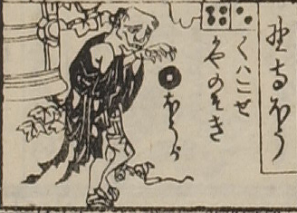

野寺坊；ノデラボウ，男；オトコ

野寺坊。ぼろぼろになった黒い僧衣を身にまとい、鋭い爪の生えた両手を胸元に垂らして立っている。背景に鐘と蔓が描かれている。
出典：親書誌：U426_nichibunken_0082：新版妖怪飛巡雙六；シンパンヨウカイトビマハリスゴロク／日付：2007／資源識別子：U426_nichibunken_0082_0023_0000
Copyright (c)2010- International Research Center for Japanese Studies, Kyoto, Japan. All rights reserved.